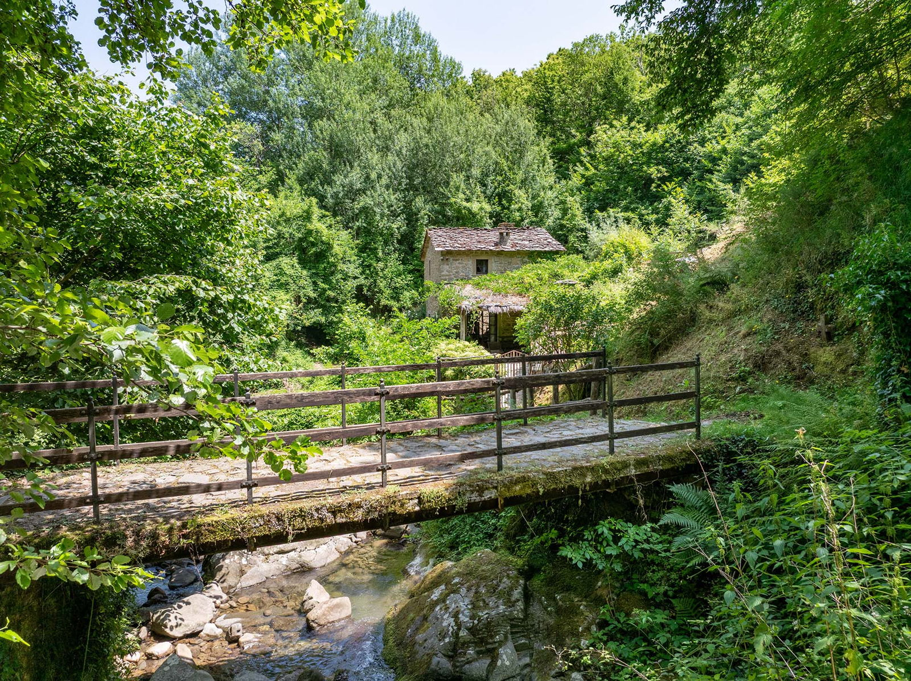

€280.000
Alto Casentino (Teggina Valley) · Tuscany · Italy
Exact brief in eastern Tuscany: early-1800s stone-and-chestnut watermill restored into a cozy country house, with a rare private circular pool carved into rock beside the stream park — character-forward and a standout bargain at €280k.
Opened 21 Sep 2026 on Engel & Völkers Cortona-Urbino; asking €280.000; 120 m² / 2 bed / 1 bath / land 22.000 m²; hasSwimmingPool true; ACTIVE; body confirms exclusive private circular pool in natural rock setting (not communal). Habitable, furnished.
Open listing